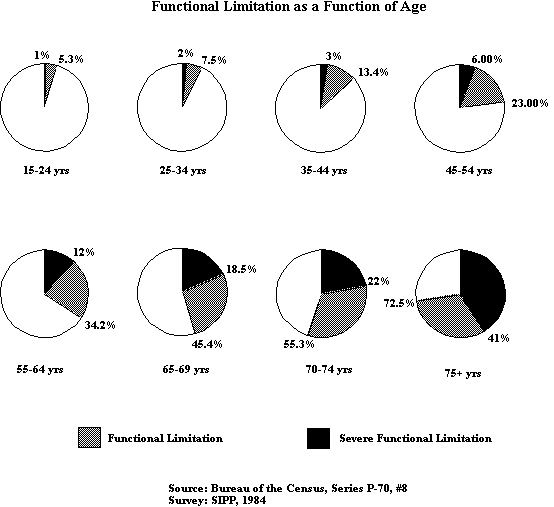
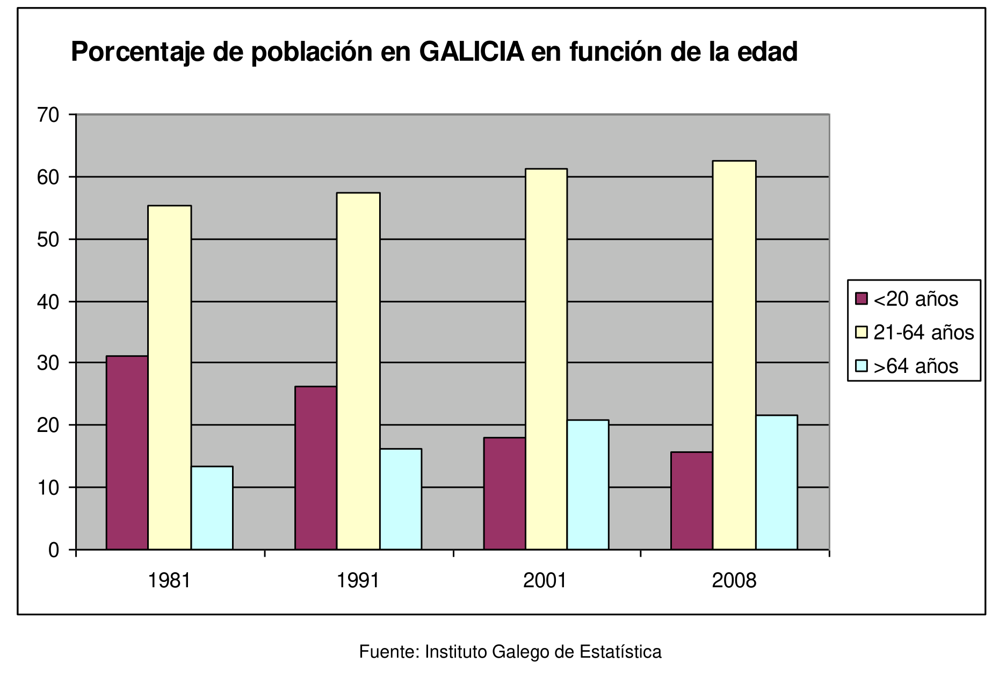
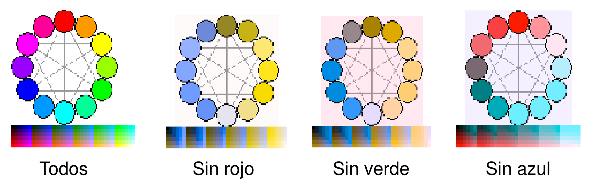
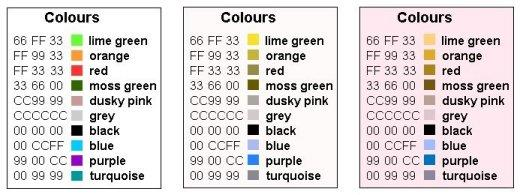
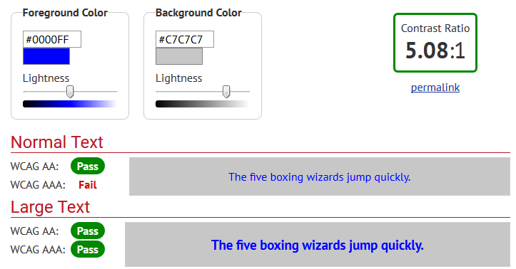
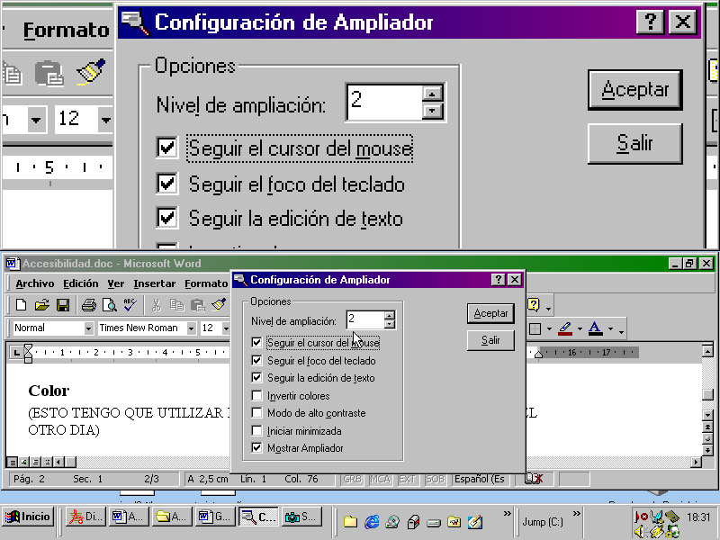

Accesibilidad
Temas de IPO · 6/8
6.1 Introducción
Las personas son diferentes entre sí, y todas las interfaces deberían acomodarse a esas diferencias para que cualquiera pueda usarlas sin problemas. El objetivo es la usabilidad universal: que nadie se vea limitado al usar algo por esas diferencias. Por eso hay que evitar diseñar solo para las características de grupos de población concretos, porque eso impone barreras innecesarias que se podrían haber evitado.
6.1.1 Por qué importa
Hay dos motivos. La edad media de la población aumenta, y existe una relación entre edad y limitaciones funcionales. Además, cada vez más gente usa sistemas interactivos, incluidas las personas mayores.

En gris, el porcentaje con limitación funcional; en negro, con limitación severa. De 15–24 años solo la tiene el 5,3 % (1 % severa); a partir de 75 años, el 72,5 % (41 % severa). Los tramos intermedios: 7,5 % (25–34), 13,4 % (35–44), 23 % (45–54), 34,2 % (55–64), 45,4 % (65–69) y 55,3 % (70–74).

Los menores de 20 años bajan de ~31 % (1981) a ~15 % (2008), mientras los mayores de 64 suben de ~13 % a ~21 %. Los valores son aproximados, leídos del gráfico.
6.1.2 Discapacidad
Una discapacidad es una diferencia individual que supera un límite más o menos arbitrario. Conviene conocer las más comunes y las soluciones que se usan para evitar los problemas que causan en las interfaces actuales. Muchas de ellas aparecen en mayor o menor grado en personas consideradas "normales": diseñar para la discapacidad beneficia a todos.
6.2 El diseño universal
El diseño universal es el proceso de diseñar productos usables por el rango más amplio de personas, que funcionen en el rango más amplio de situaciones y que sean comercialmente viables. Los productos y entornos deben poder usarlos la mayor parte de la gente sin necesidad de adaptaciones ni diseño especializado.
Tiene siete principios:
| Principio | Qué exige |
|---|---|
| 1. Uso equitativo | Usable y de precio razonable para personas con diferentes habilidades |
| 2. Uso flexible | Se acomoda a un rango amplio de personas con distintos gustos y habilidades |
| 3. Uso simple e intuitivo | Fácil de entender sea cual sea la experiencia, el conocimiento, el idioma o el nivel de concentración del usuario |
| 4. Información perceptible | Comunica bien la información necesaria, sean cuales sean las condiciones ambientales o las capacidades sensoriales del usuario |
| 5. Tolerancia al error | Minimiza los incidentes por azar y las consecuencias de acciones no previstas |
| 6. Esfuerzo físico mínimo | Se usa de forma eficiente y cómoda, con la mínima fatiga |
| 7. Tamaño y espacio para acercarse y usarlo | Espacio y tamaño apropiados para aproximarse, alcanzarlo y usarlo |
Analogía
El ejemplo clásico es el rebaje de las aceras en los pasos de peatones. Se pensó para sillas de ruedas, pero lo usan también carritos de bebé, maletas con ruedas y repartidores. Un buen diseño universal no es una "versión especial": es una versión mejor para todos.
Para entenderlo mejor
Diseño universal (Wikipedia) — origen del concepto y sus siete principios, con ejemplos (artículo).
6.3 Tipos de discapacidades
Se agrupan en visuales (de color, visión reducida y ceguera), auditivas, de movimiento y cognoscitivas.
6.3.1 Deficiencia de color
La deficiencia de color (daltonismo) afecta más a los hombres (8 %) que a las mujeres (0,5 %) porque está ligada al cromosoma X. La falta de percepción del azul es el problema más grave pero el menos común.

Sin rojo o sin verde, rojos, naranjas y verdes se confunden en tonos amarillentos o pardos. Sin azul, se confunden azules y verdes.
Hay tres soluciones:
- No codificar la información solo mediante el color: hay que añadir forma, texto o posición.
- Elegir colores distinguibles también para quien no percibe el rojo o el verde.
- Probar las visualizaciones en distintas condiciones.

De izquierda a derecha: visión normal, sin rojo y sin verde. Sin rojo o sin verde, "red", "orange" y "moss green" pasan a tonos parecidos; "blue", "black" o "grey" siguen distinguiéndose.
Una herramienta útil es el comprobador de contraste de WebAIM (webaim.org/resources/contrastchecker). Indica la razón de contraste entre el color del texto y el del fondo, y si cumple los niveles AA y AAA de las WCAG (§6.4.2).

Con 5,08:1, el texto normal aprueba el nivel AA y suspende el AAA, y el texto grande aprueba ambos. En WCAG 2, el texto normal necesita 4,5:1 para AA y 7:1 para AAA; el texto grande, 3:1 y 4,5:1.
Para entenderlo mejor
El daltonismo y cómo ven los daltónicos (Cienciomaníacos) — por qué se produce y cómo ve los colores cada tipo de daltónico (vídeo, 5:51).
6.3.2 Visión reducida
Las discapacidades visuales van desde una falta de agudeza hasta la ceguera total. Como gran parte de las interfaces actuales se apoya en elementos gráficos, lo lógico es que los usuarios con visión reducida puedan seguir usándolos hasta donde sea posible. Para ello están los ampliadores de pantalla.

El ampliador muestra en una franja superior la zona ampliada (aquí ×2) y puede seguir el cursor, el foco del teclado o el punto de edición. También permite invertir colores o usar alto contraste.
6.3.3 Deficiencias auditivas
Las personas con dificultades auditivas deberían tener menos problemas con las interfaces actuales, que son sobre todo visuales. Aun así, hay que tener en cuenta tres cosas:
- Cierta información debe convertirse en texto para que puedan seguirla.
- Algunos mensajes de alerta se codifican como sonidos, porque el oído es un canal que el usuario tiene libre. Hay que acordarse de que no todos lo oyen y ofrecer una alternativa visual.
- Algunas personas usan la lengua de signos y conocen un número relativamente pequeño de palabras escritas, así que hay que cuidar el vocabulario.
6.3.4 Movimiento
Hay usuarios con problemas para realizar tareas físicas como mover un puntero, pulsar dos teclas a la vez o mantener apretada una tecla. En el caso más extremo no pueden usar teclado ni ratón, y prefieren un sistema alternativo de entrada por voz o por movimientos de otras partes del cuerpo (cabeza, boca…).
De ahí salen dos recomendaciones. Conviene dar a las aplicaciones una interfaz por teclado lo más completa posible, porque el teclado suele ser un método de entrada más sencillo que los apuntadores como el ratón. Y hay que etiquetar bien cada elemento (botones, cuadros de diálogo…), porque los programas de entrada por voz usan esas etiquetas para manejar la interfaz.
6.3.5 Cognoscitivas
El ordenador ha entrado en todas las esferas sociales, y las personas "menos preparadas" pueden tener problemas para aprovechar los recursos tecnológicos de la vida cotidiana (viajes, facturas, compras…). Los sistemas deben planificarse para que también ellas puedan usarlos. Las dos únicas recetas son la sencillez y la evaluación con personas apropiadas.
6.4 Accesibilidad web
"El poder de la Web está en su universalidad. El acceso para todos, sin tener en cuenta las discapacidades, es un aspecto fundamental." — Tim Berners-Lee, director del W3C, en la introducción a la WAI.
La accesibilidad web es importante por varias razones:
- El uso de la Web se ha extendido a todo el espectro social.
- Da un acceso sin precedentes a la información a las personas con discapacidad.
- Produce un diseño mejor para todos: la multimodalidad permite usar la Web en otros dispositivos. Un diseño accesible también ayuda cuando hay poco ancho de banda (imágenes lentas), en entornos ruidosos (no se oye el audio), con reflejos en la pantalla (no se ve bien) o conduciendo (ojos y manos ocupados).
- Hay legislación en algunos países. En España, la Ley 34/2002 de Servicios de la Sociedad de la Información y de Comercio Electrónico (LSSI), en su disposición adicional quinta y modificaciones posteriores.
6.4.1 La WAI
El W3C (World Wide Web Consortium) alberga la Iniciativa de Accesibilidad Web (WAI, Web Accessibility Initiative, w3.org/WAI). Sus objetivos son asegurar que las tecnologías web permiten la accesibilidad, desarrollar guías y herramientas para evaluarla y facilitarla, la difusión y educación, y coordinar investigación y desarrollo. Ofrece guías para crear páginas accesibles, programas de test de accesibilidad y navegadores alternativos para personas con discapacidad.
6.4.2 Guías de diseño accesible
La WAI publica tres guías:
| Guía | Para qué |
|---|---|
| WCAG (Web Content Accessibility Guidelines) | Principios para crear contenido web accesible |
| ATAG (Authoring Tool Accessibility Guidelines) | Principios para crear herramientas de autor (editores web, gestores de contenido) que reduzcan las barreras |
| UAAG (User Agent Accessibility Guidelines) | Principios para crear agentes de usuario que reduzcan las barreras |
Un agente de usuario es cualquier software que recupera y muestra contenido web: navegadores, reproductores multimedia, plug-ins…
Las WCAG 2.0 (w3.org/TR/WCAG20) recogen aspectos generales de diseño accesible y los principios de diseño accesible. De cada principio dan una explicación, sus aplicaciones concretas (checkpoints), técnicas de implementación con ejemplos y su prioridad. Una web que cumple las pautas puede mostrar un logo de conformidad del W3C con su nivel: A, AA o AAA, de menos a más exigente (logos de conformidad).
En España, el Portal de Administración Electrónica (PAe) impulsa y coordina la administración electrónica en los organismos públicos. También se ocupa de la accesibilidad: tiene un Observatorio de la Accesibilidad y recoge la normativa.
Los enlaces del PAe que trae la diapositiva (administracionelectronica.gob.es/PAe/accesibilidad) ya no funcionan (error 404).
Para entenderlo mejor
WCAG explained in 3 mins — qué son las WCAG, sus principios y los niveles A/AA/AAA (vídeo, 3:05, en inglés).
6.4.3 Test de accesibilidad
Hay tres tipos de herramientas:
- De evaluación: analizan páginas o sitios y generan un informe o clasificación. Por ejemplo, TAW (www.tawdis.net); la WAI mantiene una lista completa.
- De reparación: ayudan al diseñador a mejorar la accesibilidad.
- Filtros y transformadores: ayudan al usuario modificando las páginas para hacerlas más accesibles.
6.5 Comprobación de la accesibilidad
Para comprobar si una aplicación es accesible:
- Seguir las listas de recomendaciones de cada sistema operativo (Microsoft, Apple).
- Manejar la interfaz solo con el teclado: comprobar que se puede y que los accesos están bien documentados e indicados.
- Comprobar que las herramientas de ampliación de pantalla del sistema funcionan bien con la aplicación.
- Cambiar los tipos de letra estándar y ver si la aplicación se sigue viendo bien.
Para la web, el W3C resume las pautas en unos consejos rápidos:
| Elemento | Qué hacer |
|---|---|
| Imágenes y animaciones | Usar el atributo alt para describir la función de cada elemento visual |
| Mapas de imagen | Usar el elemento map y texto para las zonas activas |
| Multimedia | Subtítulos y transcripción del sonido, y descripción del vídeo |
| Enlaces | Texto con sentido leído fuera de contexto: evitar "pincha aquí" |
| Organización | Encabezados, listas y estructura consistente; CSS para la maquetación |
| Figuras y diagramas | Describirlos brevemente en la página o con el atributo longdesc |
| Scripts, applets y plug-ins | Ofrecer contenido alternativo si no son accesibles |
| Marcos | Elemento noframes y títulos con sentido |
| Tablas | Facilitar la lectura línea a línea y resumirlas |
| Revisión | Verificar con las herramientas, puntos de comprobación y pautas de las WCAG |
6.6 Ideas clave
- Usabilidad universal: nadie debe verse limitado por sus diferencias. Importa porque la población envejece y la limitación funcional crece con la edad (del 5,3 % a los 15–24 años al 72,5 % a partir de 75).
- Discapacidad: diferencia individual que supera un límite arbitrario; muchas aparecen en grado leve en personas "normales".
- Diseño universal: usable por el mayor número de personas, sin adaptaciones. Sus 7 principios: uso equitativo, flexible, simple e intuitivo, información perceptible, tolerancia al error, esfuerzo físico mínimo, tamaño y espacio adecuados.
- Tipos de discapacidad: visual (color, visión reducida, ceguera), auditiva, de movimiento y cognoscitiva.
- Color: afecta al 8 % de hombres y al 0,5 % de mujeres (cromosoma X). No codificar solo con color, elegir colores distinguibles, comprobar el contraste.
- Soluciones por tipo: ampliadores (visión reducida); texto y alternativas a los sonidos, con vocabulario sencillo (auditiva); interfaz completa por teclado y etiquetas para la voz (movimiento); sencillez y evaluación con usuarios apropiados (cognoscitiva).
- Accesibilidad web: beneficia a todos (poco ancho de banda, ruido, reflejos, conducción). En España, Ley 34/2002 (LSSI).
- WAI del W3C: guías WCAG (contenido), ATAG (herramientas de autor) y UAAG (agentes de usuario). Niveles de conformidad A, AA y AAA.
- Herramientas: de evaluación (TAW), de reparación, y filtros y transformadores. Comprobar: guías del SO, usar solo el teclado, ampliadores, cambiar fuentes;
alt, subtítulos, enlaces con sentido, estructura con encabezados.